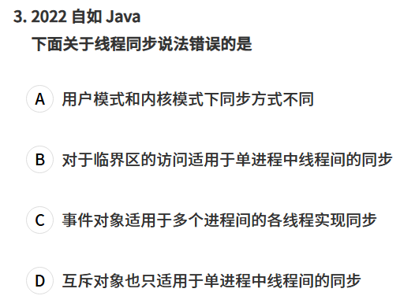

本文介绍操作系统的高频知识点和常见笔试问题：
进程与线程
进程 vs 线程：基本区别
| 项目 | 进程（Process） | 线程（Thread） |
|---|---|---|
| 定义 | 操作系统资源分配的基本单位 | 程序执行的最小单位 |
| 拥有资源 | 拥有独立的内存地址空间和系统资源（如文件描述符、堆栈等） | 共享所属进程的资源（如内存、打开文件等） |
| 切换开销 | 较大（需要上下文切换） | 较小 |
| 通信方式 | 需要进程间通信（IPC，如管道、共享内存、消息队列） | 可通过共享内存直接通信 |
| 稳定性隔离 | 相互独立，进程崩溃不会直接影响其他进程 | 一个线程崩溃可能导致整个进程崩溃 |
进程是资源分配的基本单位，这个资源指什么
在操作系统里，资源 泛指运行一个程序所需要的各种“硬件 + 软件”支持，包括：
- 处理机资源（CPU 时间片）
- 内存资源（地址空间、堆、栈）
- I/O 设备资源（显卡、打印机、硬盘、网卡等的访问权限）
- 文件资源（文件句柄、目录访问权限）
- 系统资源（信号量、管道、消息队列、端口号等 IPC 通道）
线程同步

用户模式下的同步构造不涉及cpu模式切换，速度快，但是仅限于单个进程。内核对象同步会导致cpu模式切换，代价比较大，但是支持多个进程间的同步。
死锁
多个线程互相等待对方持有的资源，导致所有线程永久阻塞、无法推进。
四个必要条件（缺一不可）:
互斥：资源同一时刻只能被一个线程占用。
持有并等待：线程已持有至少一个资源，同时在等待其他线程持有的资源。
不可抢占：资源只能由持有者主动释放，不能被强制夺走。
循环等待：线程之间形成环形的等待链，A 等 B，B 等 C，C 等 A。
四个条件同时成立才会死锁，因此破坏其中任意一个即可预防，比如固定加锁顺序（破坏循环等待）、使用
try_lock超时（破坏持有并等待）。
|
|
进程调度（等待、就绪、运行）
运行态：进程占用CPU，并在CPU上运行； 就绪态：进程已经具备运行条件，但是CPU还没有分配过来； **阻塞态：进程因等待某件事发生而暂时不能运行； **
进程在一生中，都处于上述3中状态之一。
进程调度的条件
抢占型调度
进程内存空间分布
对于现代操作系统，泄露的内存会被操作系统自动释放，叫内存自动回收。
进程间通信
常见的进程间通信：
-
管道
pipe：管道是一种半双工的通信方式，数据只能单向流动，而且只能在具有亲缘关系的进程间使用。进程的亲缘关系通常是指父子进程关系。 -
命名管道
FIFO：有名管道也是半双工的通信方式，但是它允许无亲缘关系进程间的通信。 -
消息队列
MessageQueue：消息队列是由消息的链表，存放在内核中并由消息队列标识符标识。消息队列克服了信号传递信息少、管道只能承载无格式字节流以及缓冲区大小受限等缺点。 -
共享存储
SharedMemory：共享内存就是映射一段能被其他进程所访问的内存，这段共享内存由一个进程创建，但多个进程都可以访问。共享内存是最快的 IPC 方式，它是针对其他进程间通信方式运行效率低而专门设计的。它往往与其他通信机制，如信号量，配合使用，来实现进程间的同步和通信。 -
信号量
Semaphore：信号量是一个计数器，可以用来控制多个进程对共享资源的访问。它常作为一种锁机制，防止某进程正在访问共享资源时，其他进程也访问该资源。因此，主要作为进程间以及同一进程内不同线程之间的同步手段。 -
套接字
Socket：套解口也是一种进程间通信机制，与其他通信机制不同的是，它可用于不同及其间的进程通信。 -
信号 (
signal) ： 信号是一种比较复杂的通信方式，用于通知接收进程某个事件已经发生。
信号量，PV操作
在操作系统中，PV操作是用于实现进程/线程间同步与互斥的经典机制，由荷兰计算机科学家Dijkstra提出。以下是清晰解释和快速记忆方法：
1. PV操作的本质
-
P操作（Proberen，试探）：
- 对应函数：
wait(S)（或P(S)） - 作用：申请资源，若资源不足则阻塞。
- 底层行为：
1 2 3 4 5 6void P(semaphore S) { S.value--; // 尝试占用一个资源 if (S.value < 0) { block(); // 资源不足，进程进入阻塞队列 } }
- 对应函数：
-
V操作（Verhogen，释放）：
- 对应函数：
signal(S)（或V(S)） - 作用：释放资源，唤醒等待进程。
- 底层行为：
1 2 3 4 5 6void V(semaphore S) { S.value++; // 释放一个资源 if (S.value <= 0) { wakeup(); // 唤醒阻塞队列中的一个进程 } }
- 对应函数：
3. 实际应用场景 场景1：互斥访问（临界区保护）
|
|
场景2：同步（生产者-消费者）
|
|
进程通信和线程通信
一、线程通信 vs 进程通信的区别
| 特性 | 线程通信 | 进程通信 (IPC) |
|---|---|---|
| 内存空间 | 同一进程内的线程共享地址空间 | 不同进程有独立地址空间 |
| 通信代价 | 低（直接读写共享内存） | 高（需要内核参与，数据拷贝或系统调用） |
| 安全性 | 存在竞争条件，需要同步机制（锁、信号量） | 较安全，进程隔离，不会直接破坏对方内存 |
| 主要问题 | 如何避免数据竞争、保证一致性 | 如何高效、安全地在进程间传输数据 |
| 适用场景 | 同一应用内的任务协作（多线程下载、游戏逻辑线程） | 不同应用/服务之间通信（浏览器与插件、客户端与服务器） |
二、线程通信方式
由于线程共享内存，所以通信本质上就是同步：
- 共享变量（最常见）
- 线程直接读写全局变量/堆内存。
- 必须用同步原语保证安全。
- 互斥锁（Mutex）
- 保证同一时间只有一个线程访问共享数据。
- 读写锁（RWLock）
- 多读单写，提高并发性能。
- 条件变量（Condition Variable）
- 一个线程等待条件满足，另一个线程通知唤醒。
- 信号量（Semaphore）
- 计数器，常用于控制线程对资源的访问数量。
- 自旋锁 / 原子操作
- 用于高频率、短时间的同步，避免线程切换。
三、进程通信方式（IPC）
因为进程隔离，操作系统提供了多种 IPC 机制：
- 管道（Pipe / Named Pipe）
- 匿名管道：父子进程间通信，单向。
- 命名管道（FIFO）：不同进程可通过路径访问，半双工或全双工。
- 消息队列（Message Queue）
- 内核维护的消息链表，进程可以发送/接收消息。
- 适合异步通信。
- 共享内存（Shared Memory）
- 速度最快的方式，多个进程映射到同一物理内存。
- 需要同步机制（信号量、互斥锁）保证一致性。
- 信号（Signal）
- 一种异步通知机制，用于事件通知（如 Ctrl+C 触发
SIGINT）。 - 适合简单控制，不适合大数据传输。
- 一种异步通知机制，用于事件通知（如 Ctrl+C 触发
- 套接字（Socket）
- 支持本地进程通信（Unix Domain Socket）和跨网络通信。
- 常用于客户端-服务器模型（浏览器 <-> Web 服务器）。
- 内存映射文件（mmap）
- 不同进程将同一文件映射到内存，实现共享。
- 本质类似共享内存。
- RPC（远程过程调用）
- 进程间通过代理调用彼此的函数，常见框架：gRPC、Thrift。
四、总结
- 线程通信：依赖共享内存，关键在同步机制（锁、条件变量、信号量）。
- 进程通信：依赖操作系统提供的 IPC，方式更多（管道、消息队列、共享内存、Socket）。
- 效率对比：线程通信更快，进程通信更安全。
- 应用：
- 线程通信 → 游戏引擎里的 渲染线程和逻辑线程 协调。
- 进程通信 → 浏览器主进程和插件进程、数据库服务和客户端。
进程切换与线程切换
| 项目 | 线程切换 | 进程切换 |
|---|---|---|
| 保存/恢复通用寄存器 | ✅ | ✅ |
| 保存/恢复栈指针 | ✅ | ✅ |
| 保存/恢复程序计数器 | ✅ | ✅ |
| 切换内核栈 | ✅ | ✅ |
| 切换用户栈 | ✅（如果用户线程） | ✅ |
| 切换虚拟内存页表 | ❌ | ✅ |
| 刷新 TLB | ❌ | ✅ |
| 切换文件/IO 资源 | ❌（共享） | ✅ |
| 切换安全上下文（UID/GID） | ❌ | ✅ |
| 切换成本 | 较低 | 较高 |
堆栈溢出的原因
本质是由于线程的调用栈（Call Stack）被耗尽了
可能原因：
- 过深或者错误的递归
- 过大的栈空间分配（比如分配了一个大数组或结构体）
- 函数调用层次过深
- 循环依赖或者无限调用
进程调度算法
常见的进程调度方法可以按是否抢占和调度策略目标来分类。
1. 非抢占式调度（Non-preemptive Scheduling）
进程一旦获得 CPU，直到它主动释放（结束或阻塞）才会切换。
- 先来先服务（FCFS, First-Come First-Served）
- 按到达时间顺序执行，公平但可能出现“长作业拖慢短作业”的问题（队首效应）。
- 最短作业优先（SJF, Shortest Job First）
- 优先调度预计运行时间最短的进程，可最小化平均等待时间；但需要知道作业长度，且对长作业不公平。
- 最高响应比优先（HRRN, Highest Response Ratio Next）
- 响应比 = (等待时间 + 运行时间) / 运行时间，兼顾长短作业的公平性。
2. 抢占式调度（Preemptive Scheduling）
系统可以在进程运行中强制切换 CPU（比如时间片到期、优先级更高的进程到达）。
- 时间片轮转（RR, Round Robin）
- 给每个进程固定时间片，时间片到期未完成则放到队列末尾，适合分时系统。
- 最短剩余时间优先（SRTF, Shortest Remaining Time First）
- SJF 的抢占版本，总是运行剩余时间最短的进程，新进程到达可能抢占当前进程。
- 优先级调度（Priority Scheduling）
- 给进程分配优先级，高优先级先执行；可以是静态（固定）或动态（随运行状态调整），需防止低优先级进程饥饿（老化机制）。
- 多级反馈队列（MLFQ, Multi-Level Feedback Queue）
- 维护多层队列，高优先级队列时间片短、低优先级队列时间片长，进程随运行情况在队列间调整，兼顾交互响应与吞吐量。
pthread_mutex_lock和futex
-
pthread_mutex_lock是 POSIX 线程库提供的互斥锁实现，它并不是简单地直接用futex，而是做了用户态优先的双层优化。 在大多数情况下，pthread_mutex_lock会先在用户态通过一个原子变量检查并加锁，如果锁当前是空闲的，就直接在用户态完成加锁操作，不需要陷入内核。这样完全避免了系统调用的开销，速度非常快。而
futex（Fast Userspace Mutex）是 Linux 提供的一个内核原语，虽然它名字里有 “fast”，但如果你直接用futex来做锁，每一次等待和唤醒都可能触发系统调用，涉及内核态/用户态切换，这会带来额外开销。实际上，
pthread_mutex内部也是基于futex实现的——只有当竞争发生时，也就是锁已经被其他线程持有且当前线程需要阻塞时，才会调用futex进入内核等待；而在无竞争的情况下，它只在用户态原子操作即可完成，这就是它比直接用futex高效的原因。换句话说：
- 无竞争路径：
pthread_mutex在用户态直接完成，零系统调用。 - 有竞争路径：才调用
futex进入内核进行挂起/唤醒。 而直接使用futex作为同步机制，通常会更多地进入内核，因此在多数情况下性能比pthread_mutex差。
- 无竞争路径：
内存
虚拟空间的地址分布
例题
读写锁实现
对于读写锁的实现，通常有“读者优先”和“写者优先”两种考量
对于“读者优先”的情况，只要还有一个读者，写者就必须等待，其PV操作的伪代码实现如下：
|
|
对于“写者优先”的情况，只要还有写者没有完成写入，所有读者必须排队等待，其实现如下：
|
|